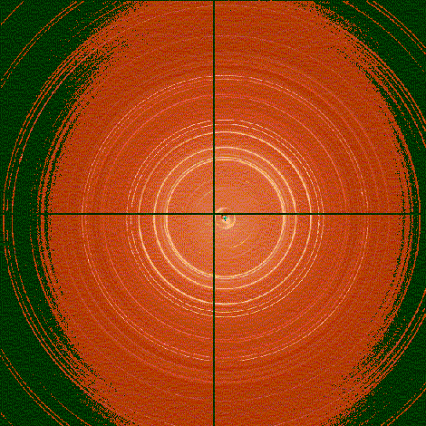

Detlef Smilgies

1. Powder diffraction pattern of the oligophene molecule BP2T,
taken at CHESS F2 station using a Quantum 4 CCD camera.
(note: the resolution of the figure shown is greatly reduced due to
resizing)
Detlef Smilgies (G-line), Marian Szebenyi, Irina Kriksunova (MacCHESS)
S. Hotta, H. Yanagi (Kobe University, Japan), unpublished.